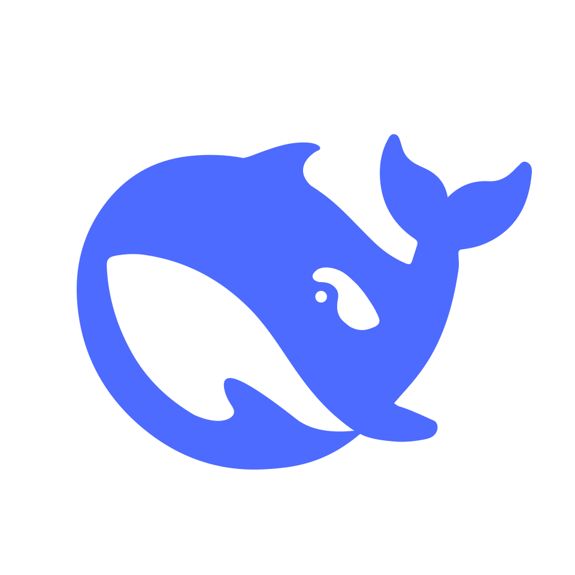

es una empresa china de inteligencia artificial que desarrolla modelos extensos de lenguaje (LLM) de código abierto. Tiene sede en Hangzhou, Zhejiang, es propiedad y está financiada exclusivamente por el fondo de cobertura chino High-Flyer, cuyo cofundador, Liang Wenfeng, estableció la empresa en 2023 y se desempeña como su director ejecutivo
El modelo DeepSeek-R1 proporciona respuestas comparables a otros LLM contemporáneos, como GPT-4o y o1 de OpenAI, a pesar de estar entrenado a un costo significativamente menor (se estima en 6 millones de dólares en comparación con los 100 millones de dólares para GPT-4 de OpenAI en 2023) y requiere una décima parte de la potencia informática de un LLM comparable. Los modelos de IA de DeepSeek se desarrollaron en medio de las sanciones de Estados Unidos a China por los chips Nvidia, que tenían como objetivo restringir la capacidad del país para desarrollar sistemas de IA avanzados
El 10 de enero de 2025, DeepSeek lanzó su primera aplicación de bot conversacional gratuita, basada en el modelo DeepSeek-R1, para iOS y Android; para el 27 de enero, DeepSeek-R1 había superado a ChatGPT como la aplicación gratuita más descargada en la App Store (iOS) en los Estados Unidos, lo que provocó que el precio de las acciones de Nvidia cayera un 18%. El éxito de DeepSeek frente a rivales más grandes y establecidos ha sido descrito como «una revolución en la IA», constituyendo «el primer intento de lo que está surgiendo como una carrera espacial global en versión IA», y marcando el comienzo de «una nueva era de política arriesgada en materia de IA»
DeepSeek hace que sus algoritmos, modelos y detalles de entrenamiento de inteligencia artificial generativa sean de código abierto, lo que permite que su código esté disponible libremente para su uso, modificación, visualización y diseño de documentos con fines de construcción. Según se informa, la empresa recluta vigorosamente a jóvenes investigadores de IA de las mejores universidades chinas y contrata a personas ajenas al campo de la informática para diversificar el conocimiento y las habilidades de sus modelos
El bot conversacional de inteligencia artificial de DeepSeek está desarrollado íntegramente por ingenieros de software chinos, mientras que los modelos de inteligencia artificial establecidos en Silicon Valley son creados por personas de diversas nacionalidades, incluidos titulares de visas H-1B de diferentes países que trabajan en Estados Unidos. Los modelos de IA de DeepSeek pueden considerarse un paso significativo hacia el desarrollo de tecnologías autóctonas de alta gama por parte de los países asiáticos, ayudando a retener talentos y reducir la fuga de cerebros de países como India y China
El 2 de noviembre de 2023, DeepSeek presentó su primer modelo, DeepSeek Coder, que está disponible de forma gratuita tanto para investigadores como para usuarios comerciales. El código del modelo se hizo de código abierto bajo la licencia MIT, con un acuerdo de licencia adicional sobre el "uso posterior abierto y responsable" del modelo en sí
El 29 de noviembre de 2023, DeepSeek lanzó DeepSeek LLM, que se escaló hasta 67 000 millones de parámetros. Se desarrolló para competir con otros LLM disponibles en ese momento con un rendimiento cercano al de GPT-4. Sin embargo, enfrentó desafíos en términos de eficiencia computacional y escalabilidad. También se lanzó una versión de chatbot del modelo llamada DeepSeek Chat
En mayo de 2024 se lanzó DeepSeek-V2. El Financial Times informó que era más barato que sus pares con un precio de 2 RMB por cada millón de tokens de salida. La clasificación de Tiger Lab de la Universidad de Waterloo clasificó a DeepSeek-V2 en el séptimo lugar de su clasificación LLM
En diciembre de 2024 se lanzó DeepSeek-V3. Llegó con 671 mil millones de parámetros y se entrenó en alrededor de 55 días a un costo de 5,58 millones de $, utilizando significativamente menos recursos en comparación con sus pares. Se entrenó en un conjunto de datos de 14,8 billones de tokens. Las pruebas de referencia mostraron que superó a LLaMA 3.1 y Qwen 2.5 mientras que igualó a GPT-4o y Claude 3.5 Sonnet. La optimización de DeepSeek de recursos limitados destacó los límites potenciales de las sanciones estadounidenses al desarrollo de IA de China. Un artículo de opinión de The Hill describió el lanzamiento como la IA estadounidense llegando a su "momento Sputnik"